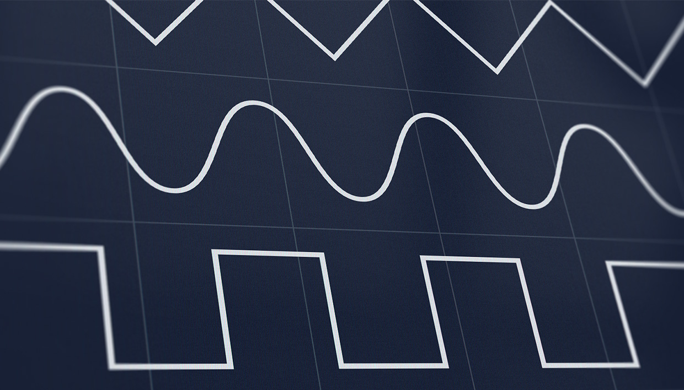
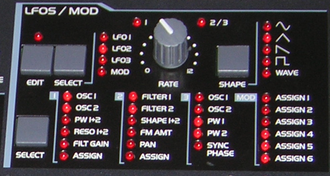
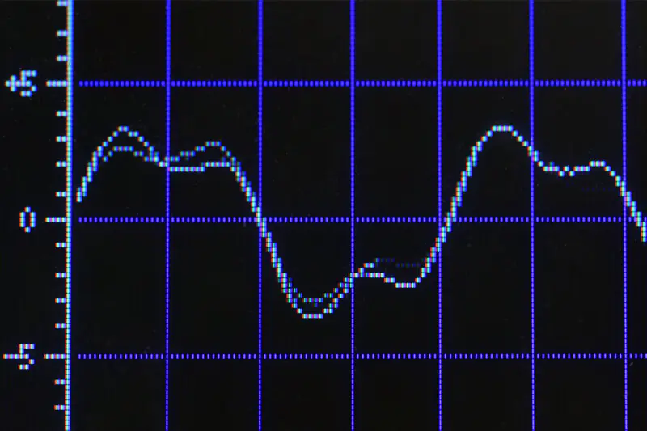

Índice de la Clase
- Clase 7: Osciladores de Baja Frecuencia (LFO)
Clase 7: Osciladores de Baja Frecuencia (LFO)
Clase 7: Osciladores de Baja Frecuencia (LFO)

Referencia interactiva: Esta sesión adapta los conceptos de síntesis modular y la guía oficial de Low-frequency oscillators (LFO) de Strudel, basada en el tutorial en video de glossing. Recuerda que puedes abrir warm.strudel.cc desde el botón superior para probar las funciones más recientes a pantalla completa.
1. ¿Qué es un LFO? Historia y funcionamiento
Un LFO (Low-Frequency Oscillation u Oscilador de Baja Frecuencia) es una señal electrónica que oscila generalmente por debajo de los 20 Hz —es decir, por debajo del rango de audición humana— creando un pulso rítmico o un barrido continuo (sweep).

Figura 1: LFO section of an Access Virus C series synthesizer
Breve historia
La oscilación de baja frecuencia se introdujo con los sintetizadores modulares de los años 1960, como el legendario sintetizador Moog. En sus inicios, el efecto de LFO solía descubrirse casi por accidente entre las miles de configuraciones que el operador podía conectar (patchear) con cables. Desde entonces, los LFOs se convirtieron en una pieza indispensable de prácticamente todo sintetizador hardware, sampler e instrumento de software.
Oscilador primario vs. LFO
- Oscilador primario (Audio): Opera en frecuencias audibles (20 Hz a 20.000 Hz) para generar la señal sonora que escuchamos.
- Oscilador secundario (LFO): Opera a frecuencias muy bajas (< 20 Hz) y funciona como una señal de control que modifica el valor de otro parámetro a lo largo del tiempo, transformando el sonido resultante sin introducir una nueva fuente de audio.
Al igual que un oscilador estándar, un LFO utiliza formas de onda periódicas clásicas (senoidal, diente de sierra, triangular, cuadrada o rampa), además de tablas de ondas o señales aleatorias.
2. Aplicaciones musicales clásicas
Un LFO se puede enrutar para controlar casi cualquier parámetro de un sintetizador. Según qué parámetro module y a qué velocidad (rate) se mueva, obtenemos distintos efectos fundamentales en la música electrónica moderna:
- Vibrato (LFO → Frecuencia / Tono): Al modular la altura musical (pitch) del oscilador, el sonido oscila ligeramente de afinación como la voz de un cantante o el dedo de un violinista.
- Trémolo (LFO → Amplitud / Volumen): Al modular la ganancia (
gain), el volumen sube y baja rítmicamente. - Wobble Bass (LFO → Frecuencia de corte del filtro
lpf): Al abrir y cerrar cíclicamente un filtro pasa-bajo —a menudo sincronizado con el tempo del track— se produce el clásico efecto "wobble" característico del Dubstep, Drum & Bass, Bass House y Future Bass. - Barridos lentos (Sweeps) vs. Efecto Ripple: Una velocidad (rate) muy lenta sobre un filtro da la sensación gradual de que el sonido se acerca o se aclara; en cambio, una velocidad muy alta genera efectos burbujeantes (rippling) o texturas de ciencia ficción.
Además, cuando se combinan varios LFOs a distintas frecuencias o se enlazan a múltiples parámetros simultáneamente, dan la impresión de que el sonido está "vivo" y en constante evolución.

3. Signals vs. LFOs en Strudel
En Strudel existen dos maneras distintas de modular parámetros:
- Signals (
sine,saw,rand...): Modulación a nivel de patrón (pattern-level modulation), que vimos en la Clase 3. .lfo(): Modulación continua directamente a nivel de audio (audio-level modulation) dentro del motor del sintetizador.
4. Aplicando nuestro primer .lfo()
Por defecto, .lfo() modula el parámetro de control que se encuentra inmediatamente a su izquierda.
En este primer ejemplo, como .lfo() está justo después de s("saw"), modula directamente la frecuencia (tono) de la onda diente de sierra. Prueba comentarlo con //.lfo() para escuchar y ver en el analizador de espectro cómo cambia:
s("saw").lfo()
.lpf(800)
._spectrum({height: 300, width: 800})
Si en cambio colocamos .lfo() inmediatamente después de .lpf(800), el LFO modulará la frecuencia de corte del filtro pasa-bajo:
s("saw")
.lpf(800).lfo()
._spectrum({height: 300, width: 800})
5. Configurando el LFO ({ key: value })
Para ir más allá del comportamiento por defecto, le pasamos a .lfo() un objeto de configuración entre llaves { } con pares clave: valor separados por comas (igual que hicimos en ._spectrum({height: 300, width: 800})).
5.1. Parámetro objetivo: control (alias c)
control (o su abreviatura c) define explícitamente qué parámetro será modulado. Esto te permite colocar .lfo() en cualquier parte de la cadena sin depender del orden:
s("saw")
.lfo({control: 'lpf'})
.lpf(800)
._spectrum({height: 300, width: 800})
Incluso puedes modular parámetros que siempre están presentes aunque no los hayas escrito explícitamente, como gain (creando un efecto de trémolo):
s("saw")
.lfo({control: 'gain'})
.lpf(800)
._spectrum({height: 300, width: 800})
5.2. Velocidad y Sincronización: rate (r) y sync (s)
rate (alias r) determina cuántas veces por segundo (en Hz) oscila el LFO. Además, todos los parámetros dentro de .lfo() aceptan patrones en mini-notación:
s("saw")
.lfo({c: 'gain', rate: "<2 4>"})
.lpf(800)
._spectrum({height: 300, width: 800})
sync (alias s): En lugar de fijar una frecuencia libre en Hz con rate, puedes usar sync para sincronizar el LFO con el tempo de tus demás patrones. sync expresa la velocidad como "oscilaciones por ciclo". Prueba cambiar o quitar sync para notar la diferencia frente al bombo:
$: s("bd*4").bank("TR909").postgain(0.5)
$: s("saw")
.lpf(800)
.lfo({sync: "<2 4 8 0.5>"})
._spectrum({height: 300, width: 800})
5.3. Profundidad relativa (depth) y absoluta (depthabs)
depth (alias dr o dep) controla la profundidad relativa. Su valor por defecto es 1, lo que significa que el parámetro sube y baja la mitad del valor base que está siendo modulado (por ejemplo, para una frecuencia base de 64 Hz, con depth: 1 oscila entre 32 Hz y 96 Hz):
s("saw").freq(64)
.lfo({r: 2, depth: "<1 2 3>"})
.lpf(800)
._spectrum({height: 300, width: 800})
depthabs (alias da) controla la profundidad absoluta en la unidad exacta del parámetro. Por ejemplo, aquí modulamos el filtro pasa-bajo exactamente 250 Hz hacia arriba y hacia abajo alrededor de los 800 Hz:
s("saw")
.lpf(800)
.lfo({r: 2, depthabs: "250"})
5.4. Centro de modulación: dcoffset (alias dc)
Si no quieres que la modulación suba y baje en la misma proporción respecto al valor base, puedes desplazar el centro con dcoffset (alias dc):
dcoffset: -0.5(valor por defecto): La modulación es simétrica hacia arriba y hacia abajo.dcoffset: 0: Toda la modulación incrementa el parámetro a partir del valor base.dcoffset: -1: Toda la modulación disminuye el parámetro por debajo del valor base.
s("saw")
.lpf(600)
.lfo({r: 2, da: "200", dcoffset: "<-0.5 -1 -0.5 0>"})
5.5. Forma de onda: shape (alias sh)
Con shape (alias sh) cambiamos la forma de la oscilación del LFO. Por defecto es triangle, pero puedes elegir cualquiera de estas 5 formas por su nombre o por su número:
Forma (shape) | Número | Comportamiento |
|---|---|---|
triangle | 0 | Sube y baja linealmente (por defecto) |
sine | 1 | Ondulación suave y redonda |
ramp | 2 | Sube gradualmente y cae de golpe |
saw | 3 | Cae gradualmente desde arriba y sube de golpe |
square | 4 | Salta abruptamente entre dos estados |
s("saw")
.lpf(800)
.lfo({r: 2, shape: ""})
._spectrum({height: 300, width: 800})
Al poder seleccionar las formas con números del 0 al 4, podemos usar funciones como irand(4) para cambiar la forma del LFO aleatoriamente:
s("saw")
.lpf(800)
.lfo({r: 2, shape: irand(4)})
5.6. Inclinación y Curva: skew (sk) y curve
skew (alias sk) permite deformar las ondas triangle y square (su valor por defecto es 0.5):
- En
triangle: inclina la punta del triángulo hacia la izquierda o derecha (0la convierte ensawy1enramp). - En
square: modifica el ancho de pulso (pulse width).
s("saw")
.lpf(800)
.lfo({r: 2, sh: "/5", skew: "<0 0.25 0.5 0.75 1>"})
curve cambia la curvatura de la oscilación elevando el LFO a esa potencia (valor por defecto 1). Valores mayores a 1 hacen la curva más pronunciada e intensa; valores entre 0 y 1 la suavizan:
s("saw")
.lpf(800)
.lfo({r: 2, sh: "", curve: "<1.3 1 0.75 1>"})
6. Modulación avanzada: id, FX index y subControl
Referenciar LFOs por id
Cuando usas varios LFOs en una misma cadena, se numeran automáticamente empezando desde 0 (el primero es 0, el segundo 1, etc.). También puedes asignarles un nombre personalizado pasándolo como segundo argumento fuera de las llaves: .lfo({ ... }, "mi_id"). Esto permite modificar un LFO específico más adelante (por ejemplo dentro de .sometimes()):
s("saw").lfo({}, "lfo_freq_saw").lpf(800)
.lfo({s: "<4 8 0.5>"}, "lfo_lpf")
.sometimes(x => x.lfo({dr: "4"}, ""))
Índice de Efecto (fxi)
Si utilizas .FX() para reordenar tu cadena de efectos, puedes indicar a qué efecto apunta el LFO usando su posición con fxi (empezando desde 0):
s("saw").FX(
distort(3),
gain(0.3), // indice de efecto (fxi) = 1
lpf(400)
).lfo({s: 16, dr: 2, c: "gain", fxi: 1})
Modular un LFO con otro LFO (subControl / sc)
¡Los LFOs también pueden modular a otros LFOs! Si encadenas un segundo .lfo() inmediatamente después de otro, por defecto modulará la velocidad (r o s) del primer LFO:
s("saw").lpf(400).gain(0.8)
.lfo({s: 16, dr: 2, c: "gain"})
.lfo({s: 0.3, dc: -1, dr: 0.8})
Si en lugar de la velocidad quieres que el segundo LFO module otro parámetro del primer LFO (como su inclinación skew o su profundidad depth), indícalo con subControl (alias sc):
s("saw").lpf(400).gain(0.8)
.lfo({s: 4, dr: 2, c: "gain"})
.lfo({s: 0.3, sc: "skew"})
Desafío de la Clase 7: Diseña tu propio Wobble / Patch evolutivo
- Crea una base rítmica de batería con
$: s("bd...").bank("RolandTR909"). - En otra pista
$:, crea un bajo cons("saw")y un filtro.lpf(600). - Aplica un
.lfo()sincronizado al ciclo consync: "<2 4 8 1>"y experimenta cambiandoshape,skewy un segundo LFO consc.
7. Repaso — Clase 7
| Parámetro | Alias | ¿Qué hace? | Ejemplo |
|---|---|---|---|
.lfo() | — | Modula a nivel de audio el parámetro anterior | s("saw").lpf(800).lfo() |
control | c | Elige qué parámetro modular (ej. 'lpf', 'gain') | .lfo({c: 'gain'}) |
rate | r | Velocidad de oscilación en Hz (veces por segundo) | .lfo({r: "<2 4>"}) |
sync | s | Velocidad sincronizada en oscilaciones por ciclo | .lfo({s: "<2 4 8 0.5>"}) |
depth | dr / dep | Profundidad relativa al valor del parámetro (def: 1) | .lfo({r: 2, dr: 2}) |
depthabs | da | Profundidad absoluta en unidades del parámetro | .lfo({r: 2, da: 250}) |
dcoffset | dc | Desplaza el centro (-0.5 centro, 0 arriba, -1 abajo) | .lfo({r: 2, dc: 0}) |
shape | sh | Forma: triangle(0), sine(1), ramp(2), saw(3), square(4) | .lfo({sh: "sine"}) |
skew | sk | Inclina triangle o cambia ancho de pulso en square | .lfo({sh: "square", sk: 0.2}) |
curve | — | Curvatura/intensidad de la onda (potencia, def: 1) | .lfo({curve: 2}) |
fxi | — | Apunta a un efecto por su índice dentro de .FX() | .lfo({c: "gain", fxi: 1}) |
subControl | sc | Hace que un LFO module un atributo del LFO anterior | .lfo({s: 0.3, sc: "skew"}) |